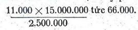

Chương X (B)
iáo dục
Một vấn đề nữa làm cho Israël phải gắng sức nhiều là vấn đề giáo dục. Một xứ trên một triệu người (năm 1952) mà có 70 giống người từ những giống người rất tân tiến như Do Thái Pháp, Đức Mỹ, Anh, tới những giống người rất có lỗ như Do Thái Yemen, Kénia, Lettonie, Erythée… mà sống chung với nhau thì vấn đề giáo dục rất phức tạp. Phải thống nhất ngôn ngữ, tư tưởng, lối sống thì mới mau thành một dân tộc được. Công việc đó là của Bộ Giáo dục quốc gia và Bộ mới xúc tiến từ năm 1953.
Việc đầu tiên của Bộ là bắt mọi người phải học tiếng Hébreu, soạn những sách dạy từ 500 tới 1000 tiếng căn bản để dân chúng học trong vài ba tháng có thể tàm tạm nói được. Tôi không biết tiếng Hébreu ra sao, chỉ biết nó có 2 mẫu tự, hết thảy đều là những phụ âm, không có nguyên âm.
Nó lại là một tử ngữ, có từ khoảng 1.300 năm trước Tây lịch, vậy chắc chắn nó không dễ học như tiếng Việt đối với chúng ta. Người nào mới hồi hương mà không biết tiếng đó thì cũng phải học ngay. Tất cả trẻ em đều phải học, mặc dầu cha mẹ chúng nói tiếng Anh, tiếng Đức. Đồng thời bộ lại phải dịch những danh từ mới về mọi ngành ra tiếng Hébreu để soạn sách giáo khoa từ tiểu học tới đại học. Người ta phải tìm trong Thánh kinh những tiếng cổ để dịch những ý niệm mới và trong sách Ezéchiel (một trong bốn nhà đại tiên tri của Do Thái) chương I, tiết 27, người ta đã thấy được chữ “điện” (électricité). Chỉ trong năm sáu năm họ hoàn thành công việc và tất cả những môn như điện tử, nguyên tử, hoá học, động cơ, đều được giảng bằng tiếng Hébreu.
Họ đã làm hồi sinh một tử ngữ. So sánh với họ, mình thực đáng tủi sau hai chục năm độc lập, vấn đề chuyển ngữ ở đại học của mình vẫn còn phải đem ra bàn.
Quân đội Israel đã giúp công vào việc truyền bá tiếng Hébreu. Thanh niên nào nhập ngũ cũng phải học hết, cả trai lẫn gái. Ngoài giờ luyện tập quân sự, họ chuyên cần học tiếng Hébreu. Có thể nói rằng tiếng Hébreu đã thống nhất dân tộc Israel.
Năm 1948, khi mới thoát ách của Anh, cả Palestine chỉ có 100.000 học sinh; mười năm sau số đó tăng lên nửa triệu, tới năm 1964 được 650.000, nghĩa là trên một phần tư dân số toàn cõi; tỉ số đó không kém tỉ số của Pháp. Vậy là về giáo dục, trong mười năm họ đã gần theo kịp các nước tân tiến nhất.
Mới đầu thiếu lớp học, thiếu thày, một số trẻ em phải ngồi trên đất, trong lều, ngày nay tình trạng đã thay đổi hẳn.
Tiểu học. Từ năm 1949, có luật cưỡng bách giáo dực. Trẻ em từ 5 tới 14 tuổi đều phải đi học: một năm ở vườn trẻ, và 8 năm ở trường tiểu học.
Niên học 1963-64, có 85.000 trẻ vô các vườn trẻ. Một điều đáng để ý là các vườn trẻ đó còn gián tiếp dạy dỗ cha mẹ của chúng nữa. Những trẻ em Yemen chẳng hạn vô các vườn đó học được tục lệ mới, lối sống mới, cha mẹ chúng là những người cổ lỗ nhờ vậy cũng biết tục lệ, lối sống đó.
Cũng niên học 1963-64 có trên 450.000 học sinh tiểu học. Chúng học tám năm - chứ không phải năm năm như ta - ngoài những môn thường như toán, sử, địa, còn có môn canh nông và các nghề chân tay: Từ năm thứ sáu chúng học, thêm một sinh ngữ: Anh, Pháp hoặc Ả Rập. Vậy học sinh học ở tiểu học ra cũng như học sinh lớp đệ ngũ của ta ( Tức lớp 7 ngày nay (1973).
Có ba hạng trường: trường công, trường của các giáo hội, trường tư được thừa nhận mục đích của giáo dục Israel là tạo “một xã hội xây dựng trên tự do, bình đẳng, khoan dung, tương trợ và nhân ái”.
Trung học. Không bắt buộc và học phải trả tiền. Học phí khá nặng. Có ba ngành: phổ thông, y thuật và canh nông; học sinh từ 14 tới 18 tuổi.
Có một số trường trung học dạy 6 năm từ hồi 12 tuổi.
Hết ban trung học, thi bằng cấp tú tài. Đậu thi được ghi tên vô đại học.
Trong số trên 100.000 học binh trung học năm 1965, hai phần ba theo ngành phổ thông, còn một phần ba theo ngành kỹ thuật (có khoảng 100 trường (dạy trong 2, 3 hay 4 năm) và ngành canh nông (có khoảng 40 trường (dạy trong 3 hay 4 năm).
Ngoài ra còn những trường sư phạm, trường y tá hướng dạy nghề cho người lớn, v…v…
Đại học:
Hai đại học lớn nhất của Israel là Đại học Jérusalem và Viện công nghệ ở Haifa.

Trường Đại học Jérusalem có đủ các phân khoa như của ta, thêm hai phân khoa: Trường Quản thủ thư viện và Viện Á - Phi. Niên học 1962- 63, trường có 8.000 sinh viên ghi tên, và 600 sinh viên có bằng cấp, chuyên về việc nghiên cứu.

Viện Công nghệ Haifa đào tạo các kỹ sư mọi ngành, chú trọng nhất tới canh nông và các kỹ nghệ trong nước. Niên học 1966 có khoảng 3.000 sinh viên và 725 chuyên về công cuộc nghiên cứu.
Vậy họ rất chú trọng đến việc nghiên cứu và tiến bộ hơn ta nhiều về phương diện đó. Ngoài ra còn một viện chuyên nghiên cứu nữa là Viện khoa học Weizmann ở Rehovoth. Weizmann là một nhà hoá học Do Thái và là vị tổng thống đầu tiên của Israel, mất năm 1952, đã có công chế ra chất acetone nhân tạo, giúp rất nhiều cho quân đội Đồng minh trong thế chiến thứ nhất. Viện có những ngành Vật lý hạch tâm, điện tử, Hoá học hữu cơ, Vật lý thực nghiệm, Vi trùng học… Những tài liệu ở trên rút trong cuốn Enseignement. Nhưng thêm Joseph Klatzmann trong Les enscignements de l’expérience israelienne (PUF) cũng xuất bản năm 1963 thì Israel còn có một trường đại học ở Tel Aviv và nhiều trường đại học tư, và tổng số sinh viên Israel niên học 1961-62 được 11.000. Tỉ số đó hơi kém tỉ số ở Pháp: Israel 11.000 trên 2.500.000; Pháp 220.000 trên 45.000.000 theo tỉ số Israel thì số sinh viên của ta hiện nay phải được 66.000.

Ngoài ra, Israel cũng có những trường mỹ thuật, truyền kinh.
Họ rất chú trọng đến môn khảo cổ vì Israel và cả miền Tây Á có rất nhiều di tích lịch sử. Nhờ đọc kỹ Thánh kinh họ tìm được những mỏ đồng mà cổ nhân đã khai thác, hiểu được công trình dẫn thuỷ nhập điền trên 2.000 năm trước.
Công việc xuất bản rất phát triển; những sách có giả trị của ngoại quốc đều được dịch ra tiếng Hébreu để nâng cao trinh độ văn hoá của quốc dân và để mài giũa tiếng Hébreu thành một dụng cụ thích hợp với thời đại.
Trong nước có rất nhiều tổ chức thanh niên của các đảng chính trị. Chín chục phần trăm thanh niên gia nhập các tổ chức đó, hoạt động mạnh mẽ trong các công tác xã hội, nhất là trong khi quốc gia hữu sự. Họ tổ chức các cuộc du lịch để học hỏi, nghiên cứu hoặc giúp đỡ đồng bào, chứ không phải chỉ để ngao du. Khắp nước có những quán thanh niên để họ nghỉ đêm.
Xét chung, thanh niên hiện nay không có nhiều lý tưởng bằng đàn anh lớp trước. Họ cho tinh thần Do Thái là cổ lỗ. Họ gần như các thanh niên Âu Mỹ, lo học nghề trước hết. Nếu không lâu lâu có một cuộc xung đột Israel - Ả Rập như năm 1956, 1967 thì có thể tinh thần Sion mất dần mà Israel sẽ như một quốc gia Tây phương, coi sự nâng cao năng suất, lợi tức, mức sống là mục tiêu quan trọng hơn cả.
Dĩ nhiên Israel cũng có một số thanh niên “cao bồi” như các nước khác, cũng có nhiều thiếu niên phạm pháp, và người ta nhận thấy rằng đa số bọn đó không ở trong một tổ chức thanh niên nào cả.
Một điểm đáng để ý là Israel săn sóc sự giáo dục của thanh niên Ả Rập cũng y như thanh niên của họ. Họ hiểu rằng cách ấy là cách hiệu quả hơn hết để giảm bớt sự cách biệt, xung đột giữa hai dân tộc.
Số kiều dân Ả Rập vào khoảng 180.000 có được 116 trường tiểu học do 900 giáo viên dạy và sáu trường trung học gồm 50 giáo sư. Năm 1964, có hết thảy 45.000 học sinh Ả Rập, tỉ số ngang với tỉ số học sinh Do Thái. Học sinh Ả Rập được học ngôn ngữ của họ.
Tuy phát triển mạnh, nền giáo dục Israel còn nhiều khuyết điểm.
Chính quyền Israel dư hiểu rằng giáo dục là một yếu tố của sự phát triển kinh tế. Kinh tế càng phát triển thì càng cần nhiều kỹ thuật gia, nhiều cán bộ. Hơn nữa, chính họ cũng nhận thấy rằng trong trận 1967, quân đội Israel đã thắng lọi một phần vì sĩ tốt có trình dộ văn hoá cao hơn Ả Rập, hiểu mau hon, có sáng kiến hơn.
Nhưng quốc gia mới thành lập, họ phải giải quyết nhiều về vấn đề cấp bách quá, nên việc “đầu tư” vào giáo dục còn chưa đủ.
Tiểu học tuy miễn phí, nhưng đối với nhiều gia đình Do Thái Á châu, Phi châu mới hồi hương, khoản sách vở giấy bút, quần áo cho trẻ vẫn còn là một gánh nặng… (ở nước ta cũng vậy, mà còn thêm nạn thiếu trường, thiếu thày nữa).
Phương pháp dạy dỗ vẫn là phương pháp các trường tiểu học châu Âu, có lẽ không hợp với các trẻ em Yemen chẳng hạn.
Khuyết điểm quan trọng hơn nữa: trung học chưa miễn phí, mà học phí khá cao, thành thử nhiều trẻ thông minh, có khiếu riêng phải bỏ học, do đó quốc gia mất một số lớn nhân tài, các người Do Thái gốc Á châu, Phi (4) vẫn bị thiệt thòi. Năm 1960 các trường đại học Israel phát ra 2.000 bằng cấp mà chỉ có 35 bằng cấp (dưới 2%) về tay các sinh viên gốc Á, Phi. Đó cũng là một cản trở cho công việc thống nhất dân tộc, nhất là cho sự phát triển kinh tế.
Chính quyền đã tìm cách bù sự thiệt thòi của hạng người gốc Á, Phi, cho các học sinh Á, Phi được hưởng thêm một số điểm trong các kỳ thi vô trung học. Nhưng nếu chúng không theo nổi chương trình thì có hại hơn là có lợi. Không phải tại chúng kém thông minh, gia đình chúng sống một lối khác, dạy chúng theo một lối khác lối phương Tây nên chúng theo chương trình phương Tây một cách khó khăn. Có lẽ phải tổ chức lại nền giáo dục từ tiểu học để cho chúng học có kết quả như các trẻ khác, nếu thông minh bằng nhau.
Một nền giáo dục quá tự do, không có kế hoạch hợp với nhu cầu của quốc gia cũng có hại: có nghề dư người như Y khoa: một y sĩ cho 400 người dân, tỉ số cao nhất thế giới, có nghề lại thiếu người; do đó sự phát triển kinh tế, xã hội không được đều.
Nhưng ta phải khen Israel đã biết chú trọng đến ngành canh nông, đào tạo được rất nhiều cán bộ, nên ngành đó của họ tiến vượt bực, chỉ trong hai chực năm đã hơn cả Pháp
Tôn giáo
Một khó khăn nữa - không biết có nên gọi là khuyết điểm không - là ảnh hưởng quá lớn của tôn giáo.
Không ai chối rằng tinh thần tôn giáo đã giúp dân tộc Do Thái giữ được tinh thần chủng tộc, tinh thần quốc gia; bị lưu lạc khắp thế giới non hai chục thế kỷ mà họ vẫn hướng về “Đất hứa”, vẫn chúc nhau “Sang năm về Jérusalem!”. Nhưng cái gì có mặt phải thì cũng có mặt trái.
Hiện nay ở Israel có một số lớn người Do Thái gốc châu Âu, châu Mỹ không theo đạo, không tin Chúa. Ngay một số người tiên khu ở cuối thế kỷ trước, cũng không về Palestine vì tinh thần tôn giáo, mà vì muốn tránh những cuộc đàn áp, tàn sát ở Châu Âu, muốn lập một quốc gia thôi. Trái lại, những người Do Thái ở Yemen có tinh thần tôn giáo rất cao, tới quá khích. Họ nghĩ rằng Israel được thành lập là do ý Chúa, Chúa cho họ “cưỡi cánh chim đại bàng” mà về Israel vậy thì nhất thiết cái gì cũng phải theo đúng lời Chúa trong thánh kinh. Chính quyền Israel tuy tuyên bố tôn trọng tự do tín ngưỡng, nhưng Do Thái giáo vẫn là quốc giáo, và luật pháp vẫn không dám trái ngược với những điều dạy trong Thánh kinh; ngày thứ bảy, ngày Sabbat, vẫn là ngày thiêng liêng, mọi công việc phải ngừng.
Vậy thì sự tự do tín ngưỡng được tôn trọng tới mức nào? Nếu chỉ xét bề ngoài thì có vẻ như tôn giáo không có thế lực gì ghê gớm lắm. Chợ không bán thịt heo, cũng chẳng sao, ăn thịt bò càng ngon, càng bổ. Xe chuyên chở công cộng không chạy ngày thứ bảy; điểm này hơi bất tiện đấy, đành rằng có xe nhà thì cứ dùng không ai cấm; nhưng có phải ai cũng có xe nhà đâu. Và dùng xe nhà thì cũng phải tránh đừng đi ngang các giáo đường lớn (ở Jérusalem, người ta cấm ngặt nhất, ở Tel Aviv, Haifa, được thong thả hơn). Rồi thêm cái nỗi các người tu hành quá khích nhìn mình chằm chằm như muốn ăn gan mình, đôi khi liệng đá vào xe mình nữa: “Chúa cho chúng về đất của chúa, mà chúng nó lại không theo lệnh Chúa à?”. Nănm 1961 xảy ra một vụ không ai tưởng tượng nổi: Có kẻ quá khích bắt cóc một em bé, đưa nó tới một nước khác, ra khỏi Israel “để nó được sống cái đời Do Thái”.
Bọn người quá khích đó tái lập lại những tục có từ hồi hai ba ngàn năm trước mà mọi người đã quên rồi, chỉ còn ghi trong sách cổ, họ ra bờ biển ném tội lỗi xuống biển; họ lại tạo thêm những tục mới, hành hương ở tất cả những nơi có di tích cũ, cả những nơi mới mẻ nữa, như hành hương tại Elath, để nhớ lại hồi xưa, tổ tiên họ được Chúa dắt qua Hồng Hải. Tai hại nhất là luật cấm các cuộc hôn nhân theo pháp luật. Nhiều người không muốn theo đạo cũng phải miễn cưỡng theo đạo để làm lễ cưới. Người nào không muốn theo đạo mà vẫn muốn lập gia đình đành phải sống một cách không hợp pháp, không có hôn thú, và trên khai sinh, con họ thành “con hoang”, có mẹ mà không có cha.
Đôi khi người ta còn cấm một số Do Thái Ấn Độ kết hôn với Do Thái khác nữa, không hiểu tại sao, và theo pháp luật, họ đều là Do Thái, là công dân Israel.
Chỉ có cách là bỏ cái luật tai ác đó đi, nhưng bây giờ nhà cầm quyền chưa dám đụng tới nó. Rồi dần dần cũng nên cho người ta có phương tiện xê dịch, chuyên chở trong ngày sabbat, cho người ta nuôi heo ở một chỗ khuất mắt một chút, vân vân. Tinh thần tôn giáo quá khích đó cố nhiên gây nhiều xung đột với Ả Rập như một chương trên chúng tôi đã nói. Không thế nào vui vẻ sống chung với nhau được nếu bên này không chịu quên vài đoạn trong Cựu ước, bên kia vài câu trong Coran.
Nếu một hai thế hệ nữa mà được như vậy thì cũng đáng mừng lắm rồi.
Quân đội
Từ thời trượng cổ, dân tộc Do Thái vì hoàn cảnh mà có tinh thần chiến đấu rất cao. Israel ở trên con đường giao thông giữa ba châu Âu, Á, Phi, và dân tộc Do Thái phải chiến đấu với các dân tộc xâm lăng từ mọi phía tới. Hiện nay họ ở cái thế ba mặt là Ả Rập, một mặt là biển, nếu muốn sinh tồn cần phải có một đạo quân mạnh mẽ, kỷ luật nghiêm khắc, lúc nào cũng sẵn sàng chiến đấu.
Như ở phần II đã nói, khi người Do Thái bị đàn áp ở châu Âu, nghe lời hô hào của Herzl, về Palestine mua đất làm ruộng, lập những làng xóm, nông trại nho nhỏ, họ đã phải tổ chức sự tự vệ, chống bọn cướp Ả Rập. Những tổ chức đó sau thành đội Tự vệ Hagana.
Trong những năm 1920, 1921, 1929, Hagana đã bí mật chế tạo được một số khí giới, chở lén khí giới ở ngoại quốc vô và đẩy lui được nhiều cuộc tấn công của các đoàn thể Ả Rập. Sau đó mỗi ngày nó một bành trướng: trong thế chiến thứ nhì, nghe lời khuyên của Ben-Gurion, có ba vạn quân tự vệ đàn ông và đàn bà tình nguyện nhập ngũ trong quân đội Anh, nhờ vậy rút thêm được nhiều kinh nghiệm.
Ngoài tổ chức Hagana, còn những đội quân Palmakh, Irgoun có tính cách độc lập, không chịu thuộc quyền điều khiển của các cơ quan trung ương. Trong chiến tranh Độc lập, những tổ chức võ trang đó là nòng cốt của lực lượng Israel.
Hết chiến tranh, nhà cầm quyền Israel biết rằng cuộc xung đột với Ả Rập thể nào cũng tái phát, nên phải tổ chức gấp quân đội. Và Quốc hội ngay từ năm 1049 đã đặt ra các luật về quân dịch.
Trước tháng chạp năm 1953, đàn ông từ 18 đến 26 tuổi, phải thi hành quân dịch hai năm rưỡi; từ 27 đến 29 tuổi, thi hành hai năm. Phụ nữ không có chồng từ 18 đến 26 tuổi cũng phải thi hành quân dịch hai năm; những thiếu nữ trong các gia đình theo Do Thái giáo có thể được miễn.
Từ tháng chạp 1963, vì số người tới tuổi nhập ngũ đã tăng, nên chính quyền giảm thời gian thi hành quân dịch đi bốn tháng, còn lại 26 và 20 tháng.
Một số rất ít sinh viên Đại học Jérusalem và Viện Công Nghệ Haifa được hoãn dịch, muốn được hoãn dịch phải hoặc là học rất giỏi và rất can đảm, có tài chỉ huy, có tinh thần quốc gia, tinh thần chiến đấu cao, hoặc có khiếu đặc biệt về môn học nào đó. Thi hành quân dịch rồi, đàn ông thành quân nhân hậu bị cho tới 49 tuổi, đàn bà không có chồng tới 34 tuổi. Mỗi năm sĩ tốt hậu bị phải vô trại luyện tập liên tiếp trong 30 ngày, và mỗi tháng luyện tập thêm một ngày nữa (hoặc cứ ba tháng một, luyện tập luôn ba ngày; như vậy để cho họ hiểu các phương pháp chiến đấu mới, cách sử dụng các vũ khí mới mà lúc nào cũng sẵn sàng chiến đấu, hễ có lệnh động viên là chỉ trong khoảng từ 24 đến 72 giờ họ có thể ra mặt trận được rồi.
Israel chia làm ba khu quân sự:
- Khu Bắc, giáp giới Syrie.
- Khu Trung ương (cũng gọi là khu Đông) giáp giới Jordanie.
- Khu Nam giáp giới Sinaï và Gaza.
Binh lực cũng gồm đủ các binh chủng như mọi quốc gia khác, nhưng Israel chú trọng nhất tới không quân vì đã mấy lần kinh nghiệm rằng hễ làm chủ được không trung thì nắm chắc phần thắng.
Trong chiến tranh năm 1967, họ dùng những khu trục cơ Mirage của Pháp bay được 2000 cây số một giờ, chỉ 10 phút là tới địa phận Ai Cập: Thời bình cũng như thời chiến, không quân luôn luôn suốt ngày đêm ở trong tình trạng báo động Nhưng bộ binh bao giờ cũng là lực lượng căn bản, cho nên được luyện rất kỹ. Như độc giả đã biết, sĩ quan họ phải xung phong, nên họ không ra lệnh “tiến” mà ra lệnh “Theo tôi!”
Hễ ra trận thì phải tiến hoài, không được ngưng, không được lùi. Sau mỗi trận đánh, họ phê phán tỉ mỉ thái độ, hành động của mỗi viên chỉ huy, và người nào chiến đấu giỏi nhất, có tài nhất, bất kỳ ở cấp bậc nào, cũng được lên địa vị chỉ huy trong trận sau. Pháo binh cộng tác chặt chẽ với bộ binh, nên các sĩ quan bộ binh phải biết sử dụng các cỗ pháo y như một sĩ quan pháo binh; mà muốn làm sĩ quan pháo binh thì phải theo học một lớp huấn luyện sĩ quan bộ binh đã.
Bất kỳ trong một đơn vị nào, cũng có một số binh sĩ quân nhu kỹ thuật cao để có thể sửa mọi khí giới, xe cộ, dụng cụ ngay trên chiến trường, nhờ vậy sự tiến quân không vì những trục trặc bất ngờ mà mất khí thế, mất đà. Họ đào tạo rất kỹ các nhân viên kỹ thuật, và khi giải ngũ, các viên đó trở thành những thợ chuyên môn, những kỹ thuật gia có tài.
Hải quân tuy không mạnh, phải hoạt động ở hai nơi xa cách nhau, trên Địa Trung Hải và Hồng Hải (vì họ không được qua kinh Suez), nhưng đã tỏ ra đắc lực trong chiến tranh 1967, vì được huấn luyện rất kỹ, có tinh thần cao, lại được không quân yểm trợ. Họ xông xáo tấn công hải quân Ai Cập chứ không phải chỉ canh phòng bờ biển mà thôi.
Dưới đây là những đặc điểm mà cũng là ưu điểm của binh lực Israel được các nhà quân sự thế giới công nhận:
- Israel là quốc gia độc nhất trên thế giới mà trong thời bình phụ nữ cũng phải đăng lính, vì nước nhỏ, dân ít - chỉ hơn dân số Sàigòn - Chợ Lớn của ta một chút - nên họ phải tận dụng nhân lực của mọi hạng người, phụ nữ trong quân đội được dùng vào những việc hành chính phụ thuộc: thư ký, coi kho, điện thoại, truyền tin, gói dù, kiểm điểm dụng cụ, cứu thương, lái xe, thợ máy… Một số lãnh nhiệm vụ dạy văn hoá cho lính mới nhập ngũ: tiếng Hebreu, sử, địa, toán.
Đơn vị nào cũng có ít nhất là 15 thiếu nữ. Họ có sĩ quan phụ nữ của họ và chỉ sĩ quan của họ mới được xét xử họ.
Người ta nhận thấy rằng nhờ có họ mà tinh thần trong quân đội cao lên: thấy họ can đảm và tận tuỵ, không một nam binh nào dám lơ là với phận sự; bọn nam binh hoá ra chăm học hơn, ăn nói nhã nhặn hơn.
- Quân đội Israel rất trẻ trung, mạnh mẽ, gan dạ. Theo tướng Mỹ S.L.A. Marshall, một nhà chuyên môn quân sự, thì Israël cho các sĩ quan ngoài 40 tuổi về vườn hết. (Documentation française số 12-5-1962). Ra trận, từ cấp trên tới cấp dưới, đều phải chiến đấu liên tiếp, nhịn ăn nhịn ngủ, kiệt lực mới thôi.
- Không có “con ông cháu cha”, cũng không kể bằng cấp. Ai cũng như ai. Hễ giỏi cầm quân thì thăng cấp, trường hợp hoãn dịch rất hiếm. Phải chiến đấu có công trận, mới tiến lần lữa từ hạ sĩ tới các cấp sĩ quan. Có lẽ một phần nhờ vậy mà trong quân đội có tinh thần bình đẳng, anh em. Ai nấy đều hăng hái giúp đỡ nhau, không ganh tị. Họ rất đoàn kết để vui vẻ phục vụ.
- Sự huấn luyện quân sự rất kỹ, nghiêm khắc gấp ba Hoa Kỳ.
- Sự tuyển lựa không khắt khe: họ dùng cả những người bị chứng sắc manh (không phân biệt được một vài màu như màu đỏ, màu xanh), những kẻ đần độn, vô học, một phần vì họ ít người, một phần vì họ biết dùng phương pháp trắc nghiệm, tùy khả năng mà giao việc, không có người nào bỏ đi không làm được việc này thì làm việc khác. Vả lại vô trại rồi, sẽ được học thêm văn hoá ít nhất từ bốn đến sáu tháng (học đủ các môn chính ở tiểu học), học nghề nữa. Có đủ sách giáo khoa cho quân lính. Không những vậy mỗi khi thao diễn ở nơi nào, người ta cũng phát cho quân đội những tập nho nhỏ về địa lý, sử ký, phong tục, cả về cổ sử, về những kế hoạch khai thác miền đó nữa. Chính các cấp chỉ huy, những lúc nghỉ trong khi hành quân, cũng thường giảng giải cho quân lính về tất cả các điều cần biết về mỗi miền. Tối, người ta chiếu phim, tập hát, kể truyện cổ tích. Có quê hương, người ta mới yêu quê hương, có biết rõ miền nào người ta chiến đấu mới đắc lực ở miền đó.
Nhiều binh sĩ nhờ chính sách giáo dục trong quân đội mà khi giải ngũ học được một nghề, hoặc thi đậu được bằng cấp trung học. Lúc đó muốn vô đại học, họ sẽ được chính quyền giúp đỡ, giảm cho một nửa học phí.
- Một điểm đáng ghi nữa là Israël có nhiều đạo quân thiếu niên. Bộ Quốc phòng và Bộ Giáo dục hợp lực với nhau lập tổ chức Gadna, gồm những thiếu niên tình nguyện từ 11 đến 18 tuổi, huấn luyện cho họ thành hạng tiên khu, kiến thiết quốc gia trong thời bình, bảo vệ quốc gia trong thời chiến.
hính bọn thiếu niên đó sau chiến tranh Độc lập đã đắp con đường ở Ein Guedi, cùng với dân làng xây cất đồn luỹ ở các làng giáp biên giới.
Tổ chức Gadna hoạt động trong 120 trường trung học, 35 trường kỹ thuật, 21 trường canh nông, năm 1964 gồm 35.000 thiếu niên. Mỗi năm 10.000 theo học lớp huấn luyện riêng trong 10 ngày.
Lại còn tổ chức Nahal nữa cũng gồm những thiếu niên tiên khu, nhưng có tính cách quân sự hơn, đào tạo những chiến sĩ dũng cảm cùng sống với dân. Sau một khóa huấn luyện gắt gao trong vòng vài ba tháng, họ được gởi về các Kibbolltz để tập công việc canh nông. Quen thuộc việc đồng áng rồi, người ta đưa họ tới một miền biên giới để canh phòng và lập một xóm làng, một nông trại ở đó. Lúc giải ngũ, họ có thể ở lại trông trại. Một số học giỏi có thể được chính phủ giúp đỡ để theo học các lớp cao đẳng canh nông. Tổ chức đó rất đáng cho chúng ta chú ý. Chúng ta cần có những thanh niên vừa cầm súng vừa cầm cày.
Nhiều quốc gia phát triển ở châu Phi thấy những kết quả rực rỡ của quân đội Israel, muốn rút kinh nghiệm của họ, hoặc phái chuyên viên qua Israel tu nghiệp, hoặc yêu cầu Israel phái huấn luyện viên qua chỉ bảo cách tổ chức các đoàn Gadna, Nahai và đào tạo các cán bộ phụ nữ.
Israel đã giúp Côte d’Ivoire thành lập một đoàn phụ nữ, giúp Congo thành lập một đội nhảy dù.